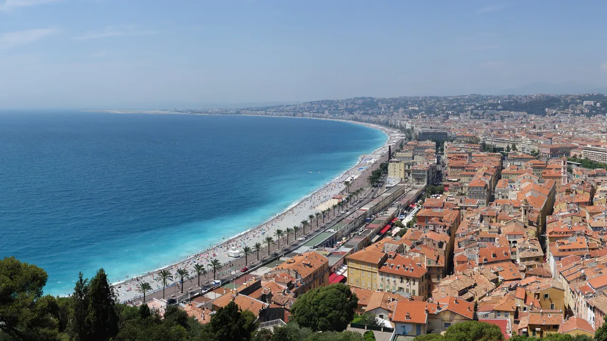
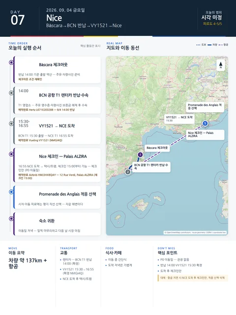

Day 7 · 9/4 금 · Nice

P0 연결거점 이동
- 핵심 실행
- Bàscara 체크아웃→BCN 반납 12:30→VY1521 15:30→NCE 16:55
- 권장 출발
- 10:30 Bàscara 출발
- 완충
- 반납 12:30→위탁마감 14:45 (135분)
- 예약
- 2건 — 완료 1 · 미확정 1 · 현황
이동일 체크리스트
- 출발·체크아웃10:30 Bàscara 출발
- 경유·핵심Bàscara 체크아웃→BCN 반납 12:30→VY1521 15:30→NCE 16:55
- 완충반납 12:30→위탁마감 14:45 (135분)
- 지연 시 생략Nice 적응산책
- 대체안NCE 도착 후 체크인만 (12 Rue Verdi, 15:00부터)
- 잠금·예약Hertz 반납 12:30 변경
실행성 감사의 값을 이동 순서로 재배열한 것이다. 체크인 시각·주차 등 미확정 값은 확정 후 채운다.
시간표
Nice
| 시간 | 일정 | 실행 포인트 |
|---|---|---|
| 도착–+60분 | 공항 → 숙소 이동·체크인 | 12 Rue Verdi (Palais ALZIRA) — Tram 2 또는 택시. 체크인 15:00부터 |
| +60–+120분 | 짐 정리·근처 슈퍼 장보기 | 물, 요거트, 빵, 과일, 햄·치즈, 샐러드 |
| 일몰 전 45–60분 | Masséna·Jardin Albert 1er·Promenade | 방향만 익히고 장거리 도보는 피함 |
| 19:30 전후 | 가벼운 저녁 | 숙소권 캐주얼 식당 또는 숙소식 |
피로도
2/5
이 날의 메모
Nice
니스 도착, 체크인, Promenade 적응
- 오늘의 결론: 첫날 비행기 이동과 숙소 안착을 우선하며 과적산책을 방지한다.
- 상태: 고정 | 날씨 의존성: 무
- 첫 행동·첫 예약: 15:00 숙소 체크인 | 마지막 귀가: 19:30 저녁식사 후 숙소 귀가
핵심 행동 (최대 3개)
- Palais ALZIRA 체크인: 15:00 이후 호스트 Catherine 지침에 따라 숙소 안착.
- 생활필수품 장보기: 숙소 근처 Carrefour 등에서 물, 아침 조식용 간단한 물품 구매.
- Promenade 가벼운 산책: Masséna 광장에서 해변 적응 걷기.
실행 시간표
오늘 지도
식사 및 카페
- 저녁: 숙소 인근 캐주얼 식당(Chez Pipo 등) 또는 숙소식 - 예산 €10–25/인
삭제 및 단축 순서 (늦었거나 피곤할 때)
- [1순위 삭제]: Promenade 일몰 전 산책 (숙소 주변 5분 걷기로 대체)
- [2순위 삭제]: 외식 (숙소 근처 슈퍼에서 구매한 샐러드/샌드위치로 대체)
대안 대책 (우천·휴관·교통 장애)
- 우천 시: Promenade 산책 생략, 숙소 바로 앞 실내 카페 또는 숙소 휴식
상세 실행 확인
- 최고 리스크
- 반납 지연·수속 혼잡
- 우선 삭제
- Nice 적응산책
- 대체안
- NCE 도착 후 체크인만 (12 Rue Verdi, 15:00부터)
- 식사·휴식
- 이동 중 간단식
- 잠금 필요
- Hertz 반납 12:30 변경
Google 실행지도
BCN 반납 → VY1521 → Nice 도착
지도 펼치기
지도는 펼칠 때만 불러옵니다.
Daily Action Map

실제 좌표와 OpenStreetMap을 사용한 실행용 요약입니다. 도로·대중교통 상황은 출발 직전에 다시 확인하세요.